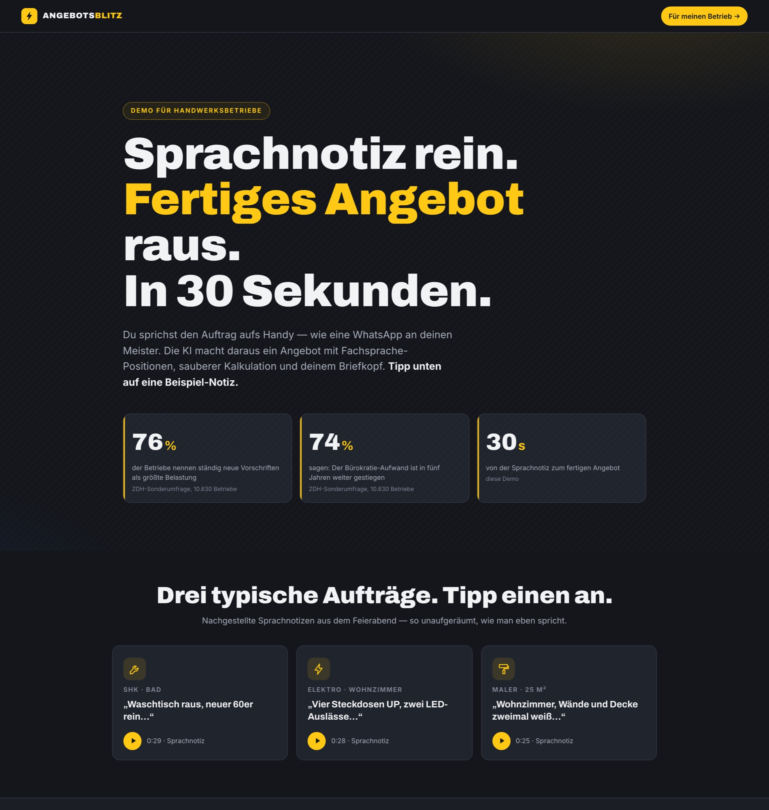

OsAI präsentiert
Eine Sprachnotiz.
Ein fertiges Angebot.
Wie Claude Fable 5 — Anthropics neues KI-Modell — aus einem einzigen
Auftrag „Angebots-Blitz" gebaut hat: eine Live-Demo, in der eine Sprachnotiz vom
Feierabend in ~30 Sekunden zum fertigen, gebrandeten Handwerker-Angebot wird — Fachsprache-Positionen,
centgenaue Kalkulation, eigener Briefkopf. Autonom — inklusive Tests, Deployment und zwei Qualitäts-Reviews.

1Prompt
30 sSprachnotiz → Angebot
1.391Zeilen Code — von der KI
112Checks, je 2× grün — lokal und live
01 · VORGEHENSWEISEZwei Sessions, ein Workflow
Kurz erklärt: Ein KI-Agent ist mehr als ein Chatbot — er kann Dateien lesen und schreiben,
Programme ausführen, im Browser testen und deployen. Claude Code bietet dafür eine
/goal-Funktion: Man gibt ein Ziel vor, und der Agent arbeitet selbstständig
daran, bis es erreicht ist. Entscheidend ist, was man ihm als Ziel mitgibt.
Deshalb lief dieses Projekt in zwei getrennten Sessions:
A
Session 1 — Planen lassen
Die Idee in einem Satz: „Angebot schreiben darf kein Feierabend-Killer sein."
Drei parallele Recherche-Stränge lieferten die Grundlage: Markt & Demo-UX (was Anbieter
wie Plancraft verkaufen — und dass niemand das Wow-Erlebnis offen zeigt) · Serverless-Technik
(wie Audio in einem einzigen KI-Aufruf zum strukturierten Angebot wird) ·
Angebots-Fachlichkeit (echte Stundensätze und m²-Preise 2026, mit Quellen aus
Handwerks-Statistiken — centgenau vorgerechnet). Verdichtet in zwei Dateien:
→ CONCEPT.md — das eingefrorene Konzept: 3 Szenarien mit festen
Summen, Dokument-Anforderungen, Schutzschicht für den Live-KI-Pfad, Phasenplan mit Quality-Gates
→ GOAL-PROMPT — der fertige, präzise Auftrag für die Umsetzung
B
Session 2 — Bauen lassen
In einer frischen Session wurde der Prompt per /goal übergeben. Der Agent
las zuerst das Konzept, dann arbeitete er fünf Phasen ab — MVP, Live-KI-Pfad, Polish,
Deployment, Selbstkritik — und testete sich nach jeder Phase selbst im echten Browser.
Bis zur Live-URL: null menschliche Eingriffe.
Warum die Trennung? Planung und Umsetzung sind verschiedene Denkmodi.
Die Planungs-Session darf diskutieren, recherchieren, verwerfen. Die Bau-Session bekommt ein
eingefrorenes, recherchiertes Konzept — und kann dadurch lange autonom laufen, ohne sich zu
verlaufen. Das Konzept ist der Vertrag: „Bei Widerspruch gilt das Konzept" steht wörtlich im Prompt.
3Recherche-Stränge in der Plan-Session
2Dateien als Vertrag — Konzept + Prompt
5Bau-Phasen mit Quality-Gates
0Eingriffe bis zur Live-URL
02 · DER AUFTRAGEin einziger Prompt
Kein Lastenheft, kein Sprint-Planning, kein Entwicklerteam. Der /goal-Auftrag
aus Session 2 (gekürzt — die Struktur ist das Entscheidende). Erste Anweisung: das recherchierte
Konzept aus Session 1 lesen.
Baue „Angebots-Blitz" — eine One-Pager-Demo für Handwerksbetriebe:
Tipp auf eine Sprachnotiz-Kachel (SHK / Elektro / Maler) — und in
~30 Sekunden entsteht ein fertiges, gebrandetes Angebot: Positionen
in Fachsprache, Material/Lohn getrennt, Netto → 19 % USt → Brutto,
PDF-Download. Das vollständige Konzept liegt in CONCEPT.md —
LIES ES ZUERST KOMPLETT; bei Widerspruch gilt das Konzept.
KERN: 3 gestagte Szenarien mit recherchierten 2026er-Preisen,
centgenau vorgerechnet (SHK 72 €/h · Elektro 68 €/h · Maler nach m²).
Das Dokument muss aussehen wie aus dem echten Büro: Briefkopf,
Angebots-Nr., Bindefrist, Positionstabelle, Zahlungsziel,
Gewährleistung. Brand-Wechsler („mit Ihrem Logo"). Dazu der
Live-Pfad: eigenen Auftrag einsprechen → die KI macht aus dem Audio
direkt das Angebot — mit Schutzschicht (Origin-Lock, Tages-Cap,
bei Fehlern sauberer Rückfall auf die Beispiel-Szenarien).
PHASEN MIT GATES (nacheinander, Gate ernst nehmen):
1. MVP-Kern ⚑ 3 Szenarien komplett, Summen EXAKT auf den Cent
2. Features ⚑ Live-Pfad + Schutz, PDF, Brand-Wechsler — 2× grün
3. Polish ⚑ Mobil 390 px + „würde ein Meister das ernst nehmen?"
4. Ship ⚑ Tests gegen die Live-URL 2× grün inkl. echtem KI-Call
5. Excellence-Pass ⚑ 10 Schwächen finden, Top-5 fixen, Re-Deploy
ERFOLGSKRITERIUM: Ein Meister tippt abends auf die Bad-Kachel,
sieht in 30 Sekunden ein Angebot, das aussieht wie aus seinem
eigenen Büro — und denkt: Das spart mir jeden verdammten Feierabend.
Was kostet das für meinen Betrieb?
Der Rest — jede Architektur-Entscheidung, jede Zeile Code, jeder Test,
jeder Commit — kam von der KI selbst.
03 · DER BAUFünf Phasen — und zwei Qualitätszyklen
1
MVP-Kern — erst die Zahlen, dann die Show
One-Pager mit drei Sprachnotiz-Kacheln: Transkript tippt sich ein, Positionen poppen nacheinander
ins weiße Dokument, Summen zählen live hoch. Jede Summe ist vorgerechnet — kein KI-Kopfrechnen im Dokument.
⚑ Gate bestanden (2× grün, 42 Checks): alle 3 Szenarien, Summen centgenau, Fachsprache in den Positionen
2
Features — der echte KI-Pfad
„Sprich deinen eigenen Auftrag ein": Aufnahme → ein einziger Gemini-Aufruf macht aus dem Audio
Transkript und strukturiertes Angebot. Drumherum eine Schutzschicht: Origin-Lock, Tages-Limit,
bei jedem Fehler sauberer Rückfall auf die Beispiel-Szenarien. Dazu PDF-Export und Brand-Wechsler.
⚑ Gate (2× grün): API liefert valides Angebots-Schema, Missbrauch blockt, Fallback greift — inkl. echter KI-Calls
3
Polish — „würde ein Meister das ernst nehmen?"
Mobile 390 px ohne Überlauf, Ladezeit, Lesbarkeit — und ein dokumentiertes Urteil gegen genau diese
Frage: Briefkopf, Bindefrist, Material/Lohn-Trennung, Gewährleistung nach BGB. Antwort: ja.
⚑ Gate (2× grün, 21 Checks): Smartphone-Breite sauber, Dokument vollständig wie ein echtes Angebot
4
Ship — live in der echten Welt
GitHub-Repo, Vercel-Hosting, eigene Domain — komplette Deploy-Kette vom Agenten eingerichtet.
⚑ Gate: alle Suiten 2× grün gegen angebots-blitz.demo.osai.solutions — inkl. echtem KI-Call über die Live-API
5
Excellence-Pass — der Agent kritisiert sich selbst
Auftrag im Prompt: 10 eigene Schwächen finden, die wichtigsten fixen. 6 Fixes — darunter ein
echter Sicherheitsfund: Der KI-Schlüssel wanderte aus der URL (wo er in Server-Logs landen kann)
in einen geschützten Header. Dazu Skip-Button, Szenario-Tabs, Mobile-Auto-Scroll.
⚑ Gate: 10 Findings dokumentiert, 6 gefixt, Re-Deploy, Suiten erneut 2× grün
Danach: der externe Blick.
Auf den Selbst-Review folgte ein unabhängiger Fresh-Eyes-Review ohne Bau-Kontext (Urteil: 7/10,
14 Findings — vom fehlenden Impressum bis zu Fachlichkeits-Details, die nur die Zielgruppe sieht:
eine unplausible Wandfläche, eine doppelt berechnete Montage, eine falsch zitierte VDE-Norm).
Er fing sogar eine falsch zugeschriebene Statistik-Quelle auf der Startseite. Alle 14 wurden
gefixt und live nachgetestet. Erst dann: final.
Der Moment, der hängen bleibt: Beim Test mit absichtlichem
Müll-Audio erfand die Live-KI einen kompletten Kunden — „Meister Röhrich aus Kiel", samt Auftrag.
Der externe Review fing es, der Fix sitzt doppelt: Der Server weist zu kurzes Audio ab, und die KI hat
jetzt die ausdrückliche Anweisung, bei Unverständlichem ehrlich „unverständlich" zu antworten — statt
zu raten. Genau dafür sind Reviews da.
24Findings über 2 Qualitätszyklen
20davon gefixt — Rest dokumentiert
3Testsuiten (46+39+27), je 2× grün — lokal und live
1Sicherheitsfund — gefixt vor Launch
04 · WERKZEUGESkills & die Pipeline
Der Agent griff auf vorbereitete Skills zurück — wiederverwendbare Fähigkeiten mit klaren
Regeln (welches Werkzeug, welche Kosten, welche Qualitätskriterien). Bemerkenswert: Das übliche
Vorab-Interview entfiel — der Lauf war komplett autonom. Diese Werkzeuge kamen zum Einsatz:
| Skill / Werkzeug | Aufgabe im Projekt |
|---|
| Recherche-Subagenten | 3 Stränge parallel in der Plan-Session: Demo-UX & Markt (Plancraft & Co.) · Serverless-Technik · Angebots-Fachlichkeit mit Quellen aus Handwerks-Statistiken (Destatis, Branchen-Preisspiegel) |
| Kie-TTS (ElevenLabs) | 3 nachgestellte Sprachnotizen für die Kacheln — deutsche Männerstimme, klingt wie eine WhatsApp vom Feierabend; transiente Fehler sauber retried |
| Gemini Structured Output | Der Kern-Trick: Audio + ein Prompt + festes Antwort-Schema → Transkript UND fertiges Angebots-JSON in einem einzigen Aufruf — kein separater Spracherkennungs-Schritt |
| webapp-testing (Playwright) | Selbsttests im echten Browser: 3 Testsuiten mit 112 Checks, je 2× grün — lokal und noch einmal gegen die Live-URL, inkl. echter KI-Calls |
| Fresh-Eyes-Review | Unabhängiger zweiter Blick auf das fertige Produkt: 14 Findings, darunter der „Meister Röhrich"-Fund und die falsch zugeschriebene Statistik |
| GitHub + Vercel | Repo, Hosting, eigene Domain, Schlüssel-Verwaltung — komplette Deploy-Kette vom Agenten eingerichtet |
Die Pipeline — vom eingefrorenen Konzept bis zur geprüften Live-Demo.
Jede Station übergibt erst, wenn ihr Gate grün ist:
①Plan3 Recherche-Stränge → eingefrorenes Konzept + Prompt — die Preise sind belegt, bevor gebaut wird
→
②Build5 Phasen autonom, jedes Gate 2× grün — 1.391 Zeilen Code, Live-KI-Pfad mit Schutzschicht
→
③ReviewSelbstkritik (10 Findings) + externer Fresh-Eyes-Review (14 Findings, Urteil 7/10)
→
④Fix20 Fixes in atomaren Schritten — jeder einzeln nachgetestet, lokal und live
→
⑤Liveangebots-blitz.demo.osai.solutions — ohne Login, ohne Anmeldung sofort erlebbar
Produktionskosten der KI-Bausteine: 3 TTS-Sprachclips, 0 AI-Bilder, KI-Angebots-Pfad im Gemini-Free-Tier.
Warum das mehr ist als eine hübsche Animation:
Die drei Beispiel-Szenarien sind vorgerechnet — aber der „Sprich deinen Auftrag ein"-Pfad ist echt:
Ihre Stimme geht durch dieselbe KI-Strecke, die auch im Betriebs-Alltag laufen würde. Genau diese Mechanik —
Sprache rein, strukturiertes Dokument raus — funktioniert ebenso für Aufmaße, Rechnungen und Berichte.
06 · UND JETZT DUWas heißt das für deinen Betrieb?
Die Demo zeigt eine fiktive „Muster Haustechnik GmbH" — das Prinzip ist real: Sprache rein,
fertiges Dokument raus. Vier Anwendungsfälle, die sich direkt aus dieser Demo ableiten:
- Das Angebot nach Feierabend — per Sprachnotiz — Auftrag besichtigt, auf dem
Heimweg eingesprochen, am Abend steht das fertige Angebot mit deinem Briefkopf und deinen
Stundensätzen zur Freigabe bereit. Statt zwei Stunden am Schreibtisch.
- Die Aufmaß-Notiz vom Beifahrersitz — Maße, Material, Besonderheiten direkt
auf der Baustelle einsprechen. Die KI macht daraus die strukturierte Position — nichts geht auf dem
Zettel verloren.
- Der Azubi nimmt Anfragen auf, der Meister prüft nur — Kundenanruf oder
Vor-Ort-Termin wird als Sprachnotiz festgehalten, das System baut den Angebots-Entwurf. Der Meister
kontrolliert und gibt frei, statt selbst zu tippen.
- Dieselbe Mechanik für Rechnungen und Aufmaße — was hier ein Angebot ist,
funktioniert genauso für Rechnungs-Entwürfe, Aufmaß-Protokolle und Regieberichte: Sprache rein,
sauberes Dokument raus.
Zur Einordnung: Handwerker-Software mit Sprach-zu-Angebot-Funktion
(z. B. Plancraft & Co.) kostet am Markt typischerweise 60–200 € pro Monat — und das Erlebnis
versteckt sich hinter Login und Onboarding. Diese Demo zeigt es ohne Account, direkt im Browser.
Was eine maßgeschneiderte Strecke mit deinem Briefkopf und deinen Preisen kostet, rechnen wir im
Erstgespräch gemeinsam durch.
Tipp dich durch die Demo —
und dann reden wir über deinen Betrieb.
angebots-blitz.demo.osai.solutions
30-Minuten-Erstgespräch — unverbindlich, direkt buchbar:
cal.com/osai-solutions/erstgespraech
OsAI
osai.solutions · Osman Öztopcu